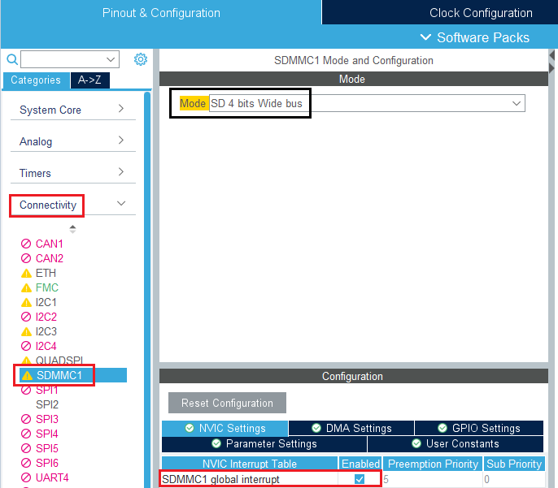
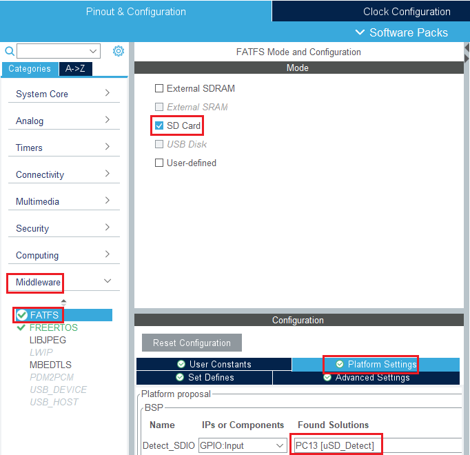

Carte SD
Dans cette partie, nous verrons l'ajout de la bibliothèque pour l'utilisation de la carte SD ainsi que son utilisation. La communication avec la carte SD se fera à l'aide de l'interface SDMMC ainsi que le DMA.
Documentation
SDMMC
L'interface SDMMC permet la communication avec des MultiMediaCards (MMC), Secure Digital (SD) memory cards et autres périphériques SD (Avec une fréquence d'horloge allant jusqu'à 50 Mhz). L'interface SDMMC permet de gérer des bus de données de 1-bit, 4-bits et 8-bits.
Parmi 3 interfaces possibles (SPI, SDIO,SDMMC) pour communiquer avec la carte SD l'interface SDMMC est la plus rapide, flexible mais plus complexe et possédant plus d'E/S.
FatFs
FAT, acronyme de file allocation table est un système de fichiers (Organisation des fichiers au sein d'un volume logique) devenu un standard de l'industrie. Il est simple et robuste et tout à fait adapté à l'utilisation pour une carte SD pour de l'embarqué.
Ajout la bibliothèque SD
Vidéo de création d'un nouveau projet pour l'utilisation de la carte SD
On se rend sur l'interface de configuration graphique de STM32CubeMX, puis on active le périphérique SDMMC1 dans Connectivity.

On ajoute la communication par DMA en gardant les paramètres par défaut.
Pour enfin ajouter le module FatFs

en activant le template DMA.

Enfin, on n'oubliera pas de changer la configuration du connecteur dans Project Manager.
Attention particulière à l'utilisation de la carteSD avec FreeRTOS, il se peut qu'il y ai certaines collisions dans la mémoire ! Il ne faut pas dépasser 60000 octets dans l'allocation à FreeRTOS.
Il ne faut pas non plus dépasser les 4096 octets par tâche au quel cas même problème.
Les noms des fichiers sont limités à 10 caractères, faites donc bien attention ! (L'erreur sera reportée avec le code erreur 6)
Fonctions principales
Gestion de la carte SD
Monter/démonter la carte SD
FRESULT f_mount (
FATFS* fs, /* Pointer to the file system object (NULL:unmount)*/
const TCHAR* path, /* Logical drive number to be mounted/unmounted */
BYTE opt /* Mode option 0:Do not mount (delayed mount), 1:Mount immediately */
)
Créer un volume
FRESULT f_mkfs (
const TCHAR* path, /* Logical drive number */
BYTE opt, /* Format option */
DWORD au, /* Size of allocation unit (cluster) [byte] */
void* work, /* Pointer to working buffer */
UINT len /* Size of working buffer */
)
Gestion des données
Ouvrir ou créer un fichier
RESULT f_open (
FIL* fp, /* Pointer to the blank file object */
const TCHAR* path, /* Pointer to the file name */
BYTE mode /* Access mode and file open mode flags */
)
Lire dans un fichier
FRESULT f_read (
FIL* fp, /* Pointer to the file object */
void* buff, /* Pointer to data buffer */
UINT btr, /* Number of bytes to read */
UINT* br /* Pointer to number of bytes read */
)
Ecrire dans un fichier
FRESULT f_write (
FIL* fp, /* Pointer to the file object */
const void* buff, /* Pointer to the data to be written */
UINT btw, /* Number of bytes to write */
UINT* bw /* Pointer to number of bytes written */
)
Ouvrir un répertoire
FRESULT f_opendir (
DIR* dp, /* Pointer to directory object to create */
const TCHAR* path /* Pointer to the directory path */
)
Fermer un répertoire
FRESULT f_closedir (
DIR *dp /* Pointer to the directory object to be closed */
)
Créer un répertoire
FRESULT f_mkdir (
const TCHAR* path /* Pointer to the directory path */
)
Changer de répertoire
FRESULT f_chdir (
const TCHAR* path /* Pointer to the directory path */
)
Codes erreur
FR_OK = 0, /* (0) Succeeded */
FR_DISK_ERR, /* (1) A hard error occurred in the low level disk I/O layer */
FR_INT_ERR, /* (2) Assertion failed */
FR_NOT_READY, /* (3) The physical drive cannot work */
FR_NO_FILE, /* (4) Could not find the file */
FR_NO_PATH, /* (5) Could not find the path */
FR_INVALID_NAME, /* (6) The path name format is invalid */
FR_DENIED, /* (7) Access denied due to prohibited access or directory full */
FR_EXIST, /* (8) Access denied due to prohibited access */
FR_INVALID_OBJECT, /* (9) The file/directory object is invalid */
FR_WRITE_PROTECTED, /* (10) The physical drive is write protected */
FR_INVALID_DRIVE, /* (11) The logical drive number is invalid */
FR_NOT_ENABLED, /* (12) The volume has no work area */
FR_NO_FILESYSTEM, /* (13) There is no valid FAT volume */
FR_MKFS_ABORTED, /* (14) The f_mkfs() aborted due to any problem */
FR_TIMEOUT, /* (15) Could not get a grant to access the volume within defined period */
FR_LOCKED, /* (16) The operation is rejected according to the file sharing policy */
FR_NOT_ENOUGH_CORE, /* (17) LFN working buffer could not be allocated */
FR_TOO_MANY_OPEN_FILES, /* (18) Number of open files > _FS_LOCK */
FR_INVALID_PARAMETER /* (19) Given parameter is invalid */